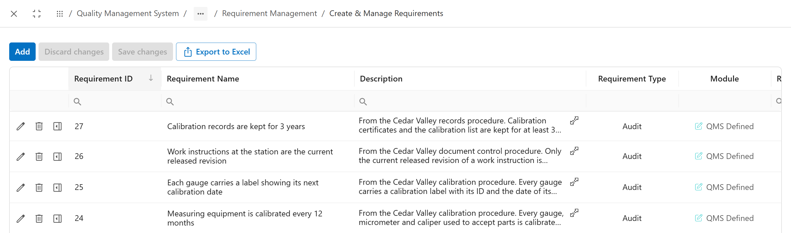
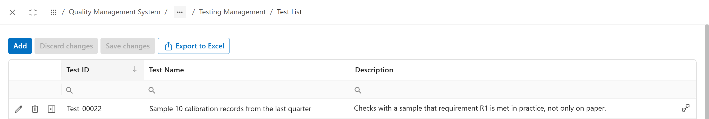

All screens in this chapter are under Apps > Quality Management System > Audit Management > Internal Audit Program Management, in Requirement Management and Testing Management.
Write down a requirement
Priya copies R1 from the calibration procedure: "Measuring equipment is calibrated every 12 months." She adds a short description, so an auditor knows what the rule means in practice.
Open Requirement Management > Create a Requirement. The same fields open when you edit a requirement from the list.
 1234
1234- Requirement Name: the rule in one sentence. Requirement Type is Audit for an audit requirement.
- Linked Test(s): the test that gathers proof for it.
- Description: where the rule comes from and what it means.
- Validation Checklist: questions the auditor answers on the day. The Cedar Valley requirements in the screenshots have none.
Keep them in one library
A company collects hundreds of requirements over time. Programs reuse them, so each rule is written once.
Requirement Management > Create & Manage Requirements lists them all. R1 to R4 are numbers 24 to 27 here.

123- Add creates a requirement from the list.
- The four Cedar Valley requirements.
- Requirement Type and Module. A requirement can also come from the process repository; chapter 16 shows how.
Plan the proof
One look at the shop floor cannot prove that every gauge was calibrated on time all year. Someone has to pull a sample of records. Priya adds a test to R1: "Sample 10 calibration records from the last quarter."
Testing Management > Create Test adds a test. All Tests lists them. Link the test to the requirement in the requirement's Linked Test(s) field.

12- The test for R1, Test-00022.
- What the test is for, in one line.
Say how much proof is enough
A sample needs a size and a source. Tom will pick 10 records out of all the gauges on Line 2.
Testing Management > Test Evidence Management describes the evidence a test needs.
 123
123- Sample Size: how many items to check, here 10.
- Population: what the sample is drawn from, here all gauges on Line 2.
- Frequency: how often the evidence is collected.
Common mistakes
- Writing a requirement nobody can check, such as "Gauges are well maintained". Write what an auditor can see or count.
- Copying the same rule twice under different names. Search the list before you add.
- Adding a test to every requirement. A test is for proof over time. A label on a gauge needs one look, not a sample.